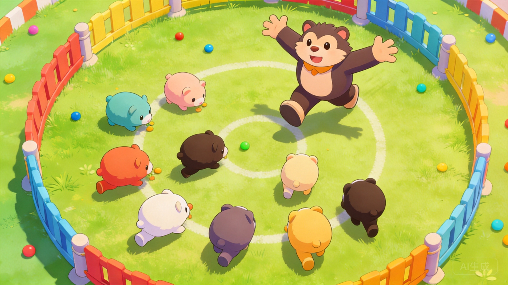
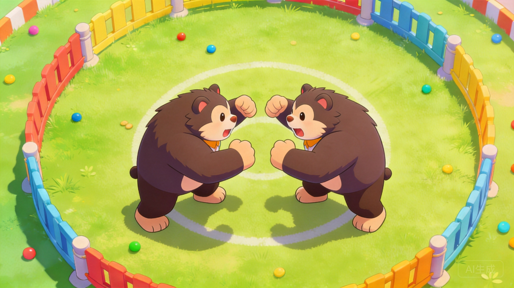
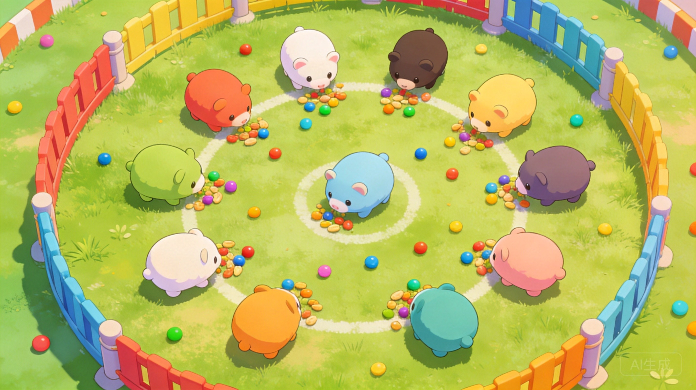

Introduction
Animal.io is a chaotic multiplayer arena game where players evolve their animals by consuming food and knocking opponents off a massive platform. What makes it unique is its physics-based tail combat and dynamic size-shifting mechanics. Instead of traditional weapons, your primary attack is a sweeping tail swing that requires precise spacing and timing. Players love it for its fast-paced, high-stakes rounds where a single bad step near the edge means instant elimination. The thrill of balancing aggressive knockbacks with strategic evasion, combined with the visual satisfaction of unlocking new animal skins, creates a highly addictive loop. Every match feels like a fresh battle for survival in a massive, unpredictable ecosystem where only the most adaptable creatures thrive.
Getting Started

To start, simply join a lobby where you spawn on a central platform. Your goal is to survive and knock others into the abyss using your tail. Movement is controlled via an on-screen joystick, which has a slight sliding inertia, so anticipate your turns. Your main attack is the tail swing, activated by pressing Tab. Remember that your tail trails behind you, so you must run slightly past an opponent and curve away to sweep them effectively. Early on, focus on gathering power-ups scattered across the floor. Meat increases your size for better body-blocking, hamburgers extend your tail length for safer ranged knockbacks, and mushrooms shrink you while boosting speed for quick dodges. Avoid the center crowds initially. Instead, hug the mid-ground to secure your first hamburger, giving you extended reach to safely poke enemies near the rim without risking your own position. Always keep an eye on the shrinking platform boundaries. Mastering this basic spacing is your first step to dominating the arena.
Basic Tips
1. Prioritize Hamburgers Early: In the first minute, a hamburger is more valuable than meat. Extended tail length lets you knock enemies off while staying safely away from the edge yourself. 2. Use the Environment: The tail swing has a short wind-up. Don't swing directly at a stationary enemy; run past them and swing as you curve away to catch them in the wide arc. 3. Beware the Slide: Movement has a light slide, especially when enlarged by meat pickups. Don't overcommit to aggressive pushes near the rim, or your own momentum will drag you off. 4. Mushroom for Escapes: If cornered by a massive opponent, grab a mushroom. Shrinking increases your speed, allowing you to dodge their slow, heavy swings and reposition for a quick counter-hit to ensure maximum effectiveness. 5. Watch the Cooldown: The tail swing is a discrete action with a brief cooldown. Spamming it while standing still wastes your attack; always reposition between swings.
Advanced Strategies

1. Feinting and Cutoffs: Use the joystick's responsive feel to feint a tail swing. Shift your path slightly to make an opponent dodge early, then commit to your swing once they move, catching them off guard. 2. Size Manipulation: Intentionally avoid meat pickups if you need to navigate tight spaces or dodge large predators. Conversely, stack meat to become a massive body-block, physically trapping smaller, fast enemies against the edge. 3. Edge Control: The hit is strongest when the tail catches an opponent close to the lip. Instead of fighting in the center, slowly herd opponents toward the edge using your extended tail, then deliver the final knockback when they have no room to retreat. 4. Cooldown Baiting: Track your opponent's tail swing cooldown. When they miss a heavy swing, immediately close the distance during their recovery frames to land a guaranteed, unblockable knockback and assert map dominance.
Pro Tips

1. Micro-Adjustments: When lining up a tail sweep, use tiny joystick micro-adjustments rather than sharp turns. This maintains your momentum and keeps your tail's arc perfectly aligned with the opponent's escape route. 2. Momentum Kills: Combine your sliding movement with a tail swing. If you are moving fast, the physics engine adds extra force to your knockback, easily launching even larger opponents off the platform. 3. Visual Deception: Unlock distinct animal skins not just for cosmetics, but because their unique tail animations can subtly alter the perceived hitbox timing, confusing opponents who are used to the default swing speed, giving you a crucial psychological edge in tight duels.
Conclusion
Animal.io perfectly blends physics-based combat with survival mechanics, rewarding smart positioning over mindless aggression. By mastering tail spacing, managing your power-ups, and controlling the arena's edges, you will quickly climb the ranks. Jump into a lobby, test these strategies, and see if you have what it takes to become the apex predator. Good luck out there!